To what extent can the ecological features of a sample be recovered from the composition of cells that it contains? For example, we know that if a sample had only one type of cell, then it could not have any cell type mixing. More generally, we’d like to know to whether spatial properties of a sample, like tumor heterogeneity, can be recovered from cell composition data alone. This is an interesting question because
- Spatial properties are known to be predictive of disease progression, as been found by directly interrogating spatial proteomic data (like MIBI-TOF).
- Cell type, in contrast to cell spatial features, can be recovered directly from cheaper cytof-type technologies.
At a low level, we’re asking to what extent cytof can be used as a proxy for spatial proteomic sensors. Viewed more broadly, though, the methodological question that this problem reflects is, can we measure whether a new data source provides truly new information, and how can we isolate the conclusions that are attainable through one sensor but not another?
Our approach has two parts,
- First, we use MIBI-TOF spatial information to extract spatial features of interest. These cells are then clustered by protein expression values.
- Second, we predict spatial properties based on the proportions of each samples’ cells belonging to each cluster.
In step 1, we cluster according to expression values because we want to use a finer-grained definition of cell types than we would typically use.
One tradeoff to note: by defining features at the sample level, we are reducing the sample size – we had many cells, but only a few samples2. However, the features for each sample can be more complex than those for individual cells, and this can give a stronger basis from which to relate the different sources of data.
Setup
First, let’s load the libraries needed in this vignette.
knitr::opts_chunk$set(message = FALSE, warning = FALSE)
library("SummarizedExperiment") library("dplyr") library("forcats") library("ggplot2") library("igraph") library("reshape2") library("tibble") library("viridis") library("BIRSBIO2020.scProteomics.embeddings") theme_set(theme_bw() + theme(panel.grid = element_blank()))
Now we’ll download data for analysis, if it’s not already present.
data_dir <- file.path(Sys.getenv("HOME"), "Data") data_paths <- download_data(data_dir) loaded_ <- load_mibi(data_dir) subsample <- spatial_subsample(loaded_$tiffs, loaded_$mibi)
## [1] "cropping 1/41"
## [1] "cropping 2/41"
## [1] "cropping 3/41"
## [1] "cropping 4/41"
## [1] "cropping 5/41"
## [1] "cropping 6/41"
## [1] "cropping 7/41"
## [1] "cropping 8/41"
## [1] "cropping 9/41"
## [1] "cropping 10/41"
## [1] "cropping 11/41"
## [1] "cropping 12/41"
## [1] "cropping 13/41"
## [1] "cropping 14/41"
## [1] "cropping 15/41"
## [1] "cropping 16/41"
## [1] "cropping 17/41"
## [1] "cropping 18/41"
## [1] "cropping 19/41"
## [1] "cropping 20/41"
## [1] "cropping 21/41"
## [1] "cropping 22/41"
## [1] "cropping 23/41"
## [1] "cropping 24/41"
## [1] "cropping 25/41"
## [1] "cropping 26/41"
## [1] "cropping 27/41"
## [1] "cropping 28/41"
## [1] "cropping 29/41"
## [1] "cropping 30/41"
## [1] "cropping 31/41"
## [1] "cropping 32/41"
## [1] "cropping 33/41"
## [1] "cropping 34/41"
## [1] "cropping 35/41"
## [1] "cropping 36/41"
## [1] "cropping 37/41"
## [1] "cropping 38/41"
## [1] "cropping 39/41"
## [1] "cropping 40/41"
## [1] "cropping 41/41"ims <- subsample$ims mibi_sce <- subsample$exper
Extract cell clusters
In the next step, we cluster cells across all samples, and then compute the cluster mixing proportions associated with each sample. For clustering, we simply run kmeans on the original protein expression matrix. mprops contains the mixing proportions that we use to summarize the non-spatial features of each sample.
cell_clusters <- kmeans(t(assay(mibi_sce)), params$K) props <- sample_proportions(colData(mibi_sce)$SampleID, cell_clusters$cluster) mprops <- data.frame(props) head(mprops)
## SampleID cluster Freq
## 1 7 1 0.04819277
## 2 1 1 0.04608295
## 3 8 1 0.01149425
## 4 2 1 0.25161290
## 5 6 1 0.06269592
## 6 27 1 0.20000000Next, we join the cluster information into high-level sample information. cd_samp has colData summarized at the individual patient level, rather than one row for each cell, so it is a dramatic reduction of the original assay.
cd <- colData(mibi_sce) %>% as.data.frame() %>% tidyr::unite(scell, SampleID, cellLabelInImage, remove = FALSE) %>% mutate( cell_type = cell_type(mibi_sce), cell_group = fct_lump(cell_type, prop = 0.05), SampleID = factor(SampleID, rownames(props)) ) cd_samp <- cd %>% group_by(SampleID) %>% summarise_all(function(x) x[1] ) %>% mutate(SampleID = factor(SampleID, rownames(props))) cluster_ids <- setNames(cell_clusters$cluster, cd$scell)
Below, we plot the sample-level cluster compositions, based entirely protein expression. Each column represent one sample, and each row is one expression cluster. The shading of a cell is the (square root of the) proportion of that sample that belongs in that cluster. Each column summarizes the protein expression (and hence cell type) composition of that sample.
ggplot(mprops %>% left_join(cd_samp)) + geom_tile(aes(x = SampleID, y = cluster, fill = sqrt(Freq))) + facet_grid(. ~ GRADE, scale="free_x", space="free_x") + scale_fill_gradient(low = "white", high = "black") + theme(legend.position = "bottom")
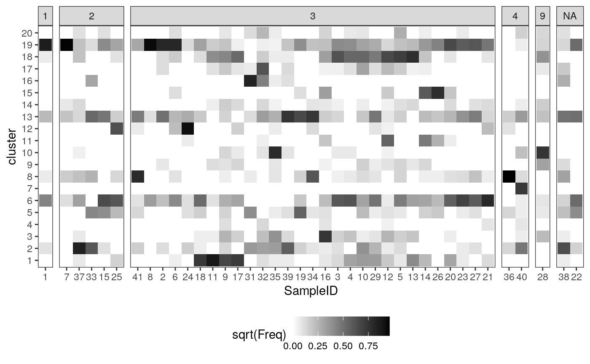
Spatial features
Next we compute the spatial features that we want to associate with the cell type composition information above. These are the ecological features associated with each sample – the data above summarized individual cells, but these data describe their interactions.
We first polygonize the rasters and extract a corresponding KNN graph. For each cell, we extract the order-3 subgraph surrounding it. For each of these subgraphs, we compute the entropy of cluster composition (which reflects tumor heterogeneity) and average pairwise distance (which reflects tumor density).
sample_names <- as.character(cd_samp$SampleID) graphs <- list() for (i in seq_along(sample_names)) { print(sprintf("graph %s/%s", i, length(sample_names))) poly <- polygonize(ims[[sample_names[i]]]) %>% filter(cellLabelInImage > 1) graphs[[i]] <- extract_graph(poly) }
## [1] "graph 1/40"
## [1] "graph 2/40"
## [1] "graph 3/40"
## [1] "graph 4/40"
## [1] "graph 5/40"
## [1] "graph 6/40"
## [1] "graph 7/40"
## [1] "graph 8/40"
## [1] "graph 9/40"
## [1] "graph 10/40"
## [1] "graph 11/40"
## [1] "graph 12/40"
## [1] "graph 13/40"
## [1] "graph 14/40"
## [1] "graph 15/40"
## [1] "graph 16/40"
## [1] "graph 17/40"
## [1] "graph 18/40"
## [1] "graph 19/40"
## [1] "graph 20/40"
## [1] "graph 21/40"
## [1] "graph 22/40"
## [1] "graph 23/40"
## [1] "graph 24/40"
## [1] "graph 25/40"
## [1] "graph 26/40"
## [1] "graph 27/40"
## [1] "graph 28/40"
## [1] "graph 29/40"
## [1] "graph 30/40"
## [1] "graph 31/40"
## [1] "graph 32/40"
## [1] "graph 33/40"
## [1] "graph 34/40"
## [1] "graph 35/40"
## [1] "graph 36/40"
## [1] "graph 37/40"
## [1] "graph 38/40"
## [1] "graph 39/40"
## [1] "graph 40/40"spatial <- list() for (i in seq_along(sample_names)) { print(sprintf("spatial stats %s/%s", i, length(sample_names))) SG <- subgraphs(graphs[[i]]) ptrn <- paste0("^", sample_names[i], "_") clusters_ <- cluster_ids[grepl(ptrn, names(cluster_ids))] names(clusters_) <- gsub(ptrn, "", names(clusters_)) spatial[[sample_names[i]]] <- tibble( scell = paste0(sample_names[i], "_", names(V(graphs[[i]]))), entropy = entropies(SG, clusters_), avg_dists = avg_dists(SG) ) }
## [1] "spatial stats 1/40"
## [1] "spatial stats 2/40"
## [1] "spatial stats 3/40"
## [1] "spatial stats 4/40"
## [1] "spatial stats 5/40"
## [1] "spatial stats 6/40"
## [1] "spatial stats 7/40"
## [1] "spatial stats 8/40"
## [1] "spatial stats 9/40"
## [1] "spatial stats 10/40"
## [1] "spatial stats 11/40"
## [1] "spatial stats 12/40"
## [1] "spatial stats 13/40"
## [1] "spatial stats 14/40"
## [1] "spatial stats 15/40"
## [1] "spatial stats 16/40"
## [1] "spatial stats 17/40"
## [1] "spatial stats 18/40"
## [1] "spatial stats 19/40"
## [1] "spatial stats 20/40"
## [1] "spatial stats 21/40"
## [1] "spatial stats 22/40"
## [1] "spatial stats 23/40"
## [1] "spatial stats 24/40"
## [1] "spatial stats 25/40"
## [1] "spatial stats 26/40"
## [1] "spatial stats 27/40"
## [1] "spatial stats 28/40"
## [1] "spatial stats 29/40"
## [1] "spatial stats 30/40"
## [1] "spatial stats 31/40"
## [1] "spatial stats 32/40"
## [1] "spatial stats 33/40"
## [1] "spatial stats 34/40"
## [1] "spatial stats 35/40"
## [1] "spatial stats 36/40"
## [1] "spatial stats 37/40"
## [1] "spatial stats 38/40"
## [1] "spatial stats 39/40"
## [1] "spatial stats 40/40"Now we join in these spatial statistics with the sample-level summaries we computed before. To do this, we first summarize the cell-neighborhood features into features across the entire spatial sample. Here, we simply take the average and variances of these subgraph features, for all subgraphs in the graph.
spatial <- bind_rows(spatial, .id = "SampleID") %>% mutate(SampleID = factor(SampleID, levels(mprops$SampleID))) spatial_samp <- spatial %>% inner_join(cd) %>% group_by(SampleID) %>% summarise( me = mean(entropy), sde = sd(entropy), mdist = mean(avg_dists), sdist = sd(avg_dists), .groups = "drop" ) %>% left_join(cd_samp) spatial_cell <- spatial %>% tidyr::separate(scell, c("SampleID", "cellLabelInImage")) %>% mutate( cellLabelInImage = as.numeric(cellLabelInImage) ) %>% left_join(cd)
These figures give us a sense of how the new spatial statistics are associated with known sample characteristics. For example, the cellular neighborhoods of CD8 cells are generally more varied in expression type than those of keratin-positive tumor cells.
ggplot(spatial_cell) + geom_histogram(aes(x = entropy, fill = as.factor(TIL_score))) + scale_fill_brewer(palette = "Greens", na.value = "grey") + facet_grid(cell_group ~ ., scale = "free") + theme( legend.position = "bottom", strip.text.y = element_text(angle = 0) )

ggplot(spatial_cell) + geom_histogram(aes(x = avg_dists, fill = as.factor(TIL_score))) + scale_fill_brewer(palette = "Greens", na.value = "grey") + facet_grid(cell_group ~ ., scale = "free") + theme( legend.position = "bottom", strip.text.y = element_text(angle = 0) )

slev <- spatial_samp %>% dplyr::select(SampleID, mdist) %>% arrange(mdist) %>% .[["SampleID"]] ggplot(spatial_cell %>% mutate(SampleID = factor(SampleID, levels = slev))) + geom_point( aes(x = avg_dists, y = entropy, col = cell_group), size = 0.5, alpha = 0.8 ) + facet_wrap(~ SampleID) + scale_fill_brewer(palette = "Set2") + theme( legend.position = "bottom", strip.text.y = element_text(angle = 0), panel.spacing = unit(0, "cm") )
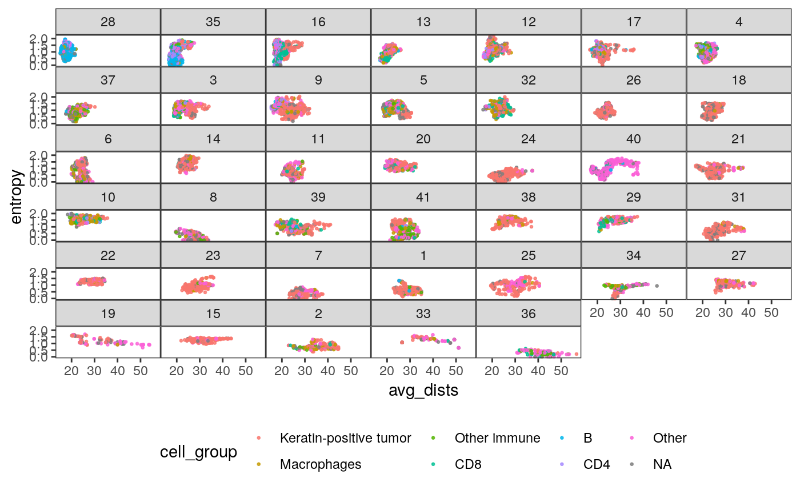
In the figures below, we relate sample characteristics to these extracted features.
- The first figure plots the relationship between average pairwise distance and entropy of cell neighborhoods, faceted by patient. It shows that different samples tend to have very different values of these features, and that the same cell type can have different spatial properties depending on the patient. It also shows that there are subgroups of patients with similar entropy and density properties (e.g., 28 and 35).
- The second figure plots the average subgraph entropy against patient survival, shaded by TIL score, which is a measure of the degree to which each tumor is “invaded” by immune cells. There is no detectable correlation.
- The third figure is the analogous plot for average pairwise distance within subgraphs. When the TIL score is low, the average pairwise distance is large.
ggplot(spatial_samp) + geom_point( aes(x = me, y = Survival_days_capped_2016.1.1), size = 4 ) + geom_point( aes(x = me, y = Survival_days_capped_2016.1.1, col = as.factor(TIL_score)), size = 2 ) + scale_color_brewer(palette = "Greens", na.value = "grey") + theme(legend.position = "bottom")
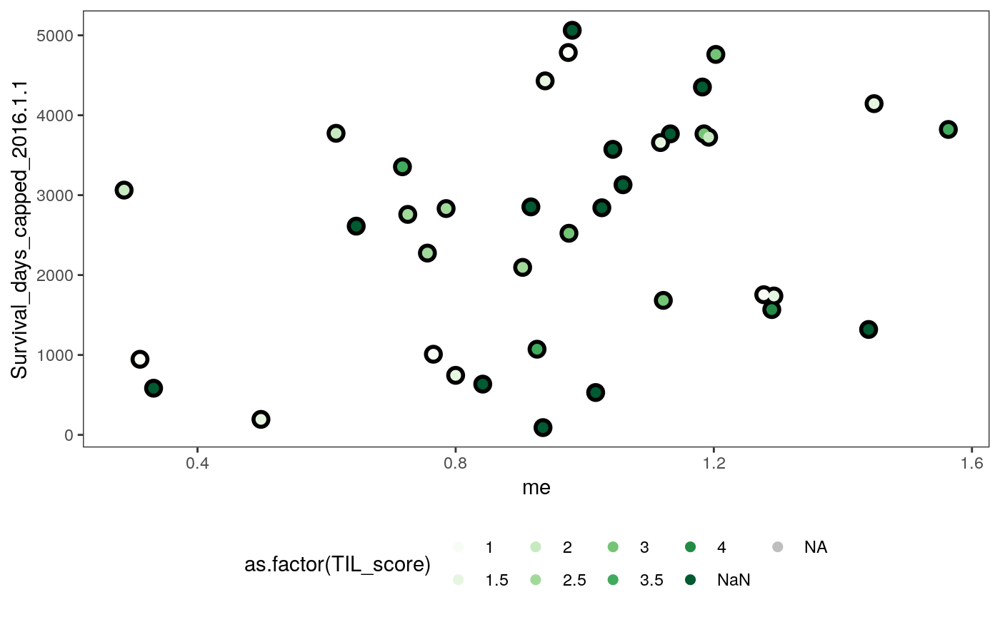
ggplot(spatial_samp) + geom_point( aes(x = mdist, y = Survival_days_capped_2016.1.1), size = 4 ) + geom_point( aes(x = mdist, y = Survival_days_capped_2016.1.1, col = as.factor(TIL_score)), size = 2 ) + scale_color_brewer(palette = "Greens", na.value = "grey") + theme(legend.position = "bottom")
We can perform similar exploratory analysis at the cell, rather than the patient, level. The figures below expand each sample above into all their component cells.
ggplot(spatial_cell) +
geom_jitter(
aes(x = TIL_score, y = entropy, col = as.factor(SampleID)),
size = 0.8, alpha = 0.8
) +
theme(legend.position = "none")
ggplot(spatial_cell) +
geom_jitter(
aes(x = TIL_score, y = avg_dists, col = as.factor(SampleID)),
size = 0.8, alpha = 0.8
) +
theme(legend.position = "none")Relating data sources
To resolve the questions posed at the start of this vignette, we will try to predict the sample-wise ecological properties using only the cell cluster compositions. Very high accuracy would suggest high redundancy between these datasets, while low accuracy suggests that the devices are capturing orthogonal sources of variation.
Alternatively, we could relate each table to a single response variable, here, the survival time of each patient. In this supervised analog of the above analysis we see whether adding a new data source increases the ability to predict the response. If the information between these sources is completely redundant, we would expect the performance to remain about the same (or even deteriorate, since fitting will become more challenging in higher dimensions). This approach is deferred to the next section. Understanding the trade-offs between the first (unsupervised, more CCA-like) and second (supervised, PLS-like) analysis is an interesting direction for future work.
First, we prepare the covariates and response data. Our covariates are the (square-root transformed) cluster mixture proportions associated with each sample. Remember that these clusters are computed without reference to any spatial information – they are in principle recoverable from cytof technologies alone.
spatial_samp <- spatial_samp %>% mutate(SampleID = factor(SampleID, levels(mprops$SampleID))) spatial_comp <- spatial_samp %>% dplyr::select(SampleID, me, sde, mdist, sdist, TIL_score) %>% left_join(mprops) %>% dcast(SampleID + me + sde + mdist + sdist + TIL_score ~ cluster) x <- spatial_comp %>% dplyr::select(matches("[0-9]+")) %>% as.matrix() %>% sqrt()
As our first response, we’ll consider the average cell-centric entropy.
y <- as.numeric(scale(spatial_comp$me)) fits <- fit_wrapper(x, y)

## Random Forest
##
## 40 samples
## 20 predictors
##
## No pre-processing
## Resampling: Bootstrapped (25 reps)
## Summary of sample sizes: 40, 40, 40, 40, 40, 40, ...
## Resampling results across tuning parameters:
##
## mtry RMSE Rsquared MAE
## 2 0.6921844 0.6806644 0.5748155
## 11 0.7030967 0.5703709 0.5857473
## 20 0.7363269 0.5070248 0.6115206
##
## RMSE was used to select the optimal model using the smallest value.
## The final value used for the model was mtry = 2.plot_fits(x, y, fits$glmnet, fits$rf)

It looks like quite a bit, but not all, of the variation in average entropy, can be explained by cell composition. What about the average neighborhood size or standard errors of entropy and neighborhood size?
y <- as.numeric(scale(spatial_comp$mdist)) fits <- fit_wrapper(x, y)
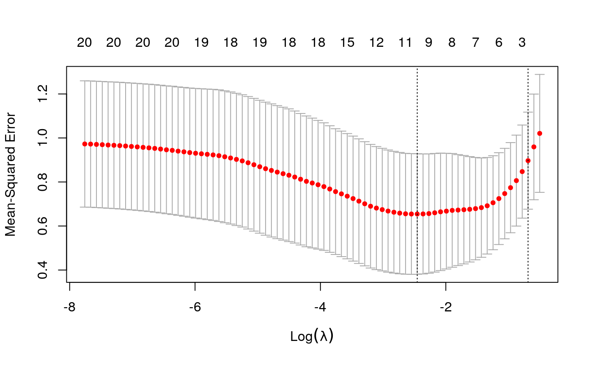
## Random Forest
##
## 40 samples
## 20 predictors
##
## No pre-processing
## Resampling: Bootstrapped (25 reps)
## Summary of sample sizes: 40, 40, 40, 40, 40, 40, ...
## Resampling results across tuning parameters:
##
## mtry RMSE Rsquared MAE
## 2 0.6984595 0.5772637 0.5111530
## 11 0.7255317 0.5030249 0.5244293
## 20 0.7526370 0.4702853 0.5539058
##
## RMSE was used to select the optimal model using the smallest value.
## The final value used for the model was mtry = 2.plot_fits(x, y, fits$glmnet, fits$rf)

y <- as.numeric(scale(spatial_comp$sde)) fits <- fit_wrapper(x, y)
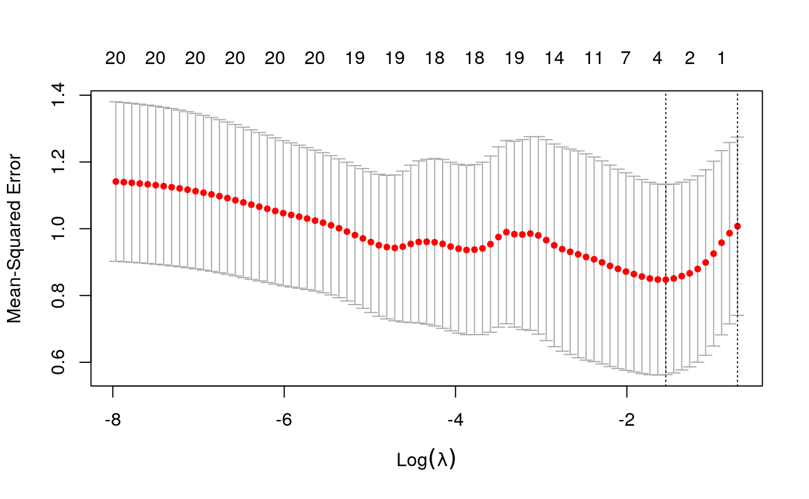
## Random Forest
##
## 40 samples
## 20 predictors
##
## No pre-processing
## Resampling: Bootstrapped (25 reps)
## Summary of sample sizes: 40, 40, 40, 40, 40, 40, ...
## Resampling results across tuning parameters:
##
## mtry RMSE Rsquared MAE
## 2 0.8948286 0.12128238 0.7160297
## 11 0.9402100 0.11110682 0.7383697
## 20 0.9864336 0.08732524 0.7795593
##
## RMSE was used to select the optimal model using the smallest value.
## The final value used for the model was mtry = 2.plot_fits(x, y, fits$glmnet, fits$rf)
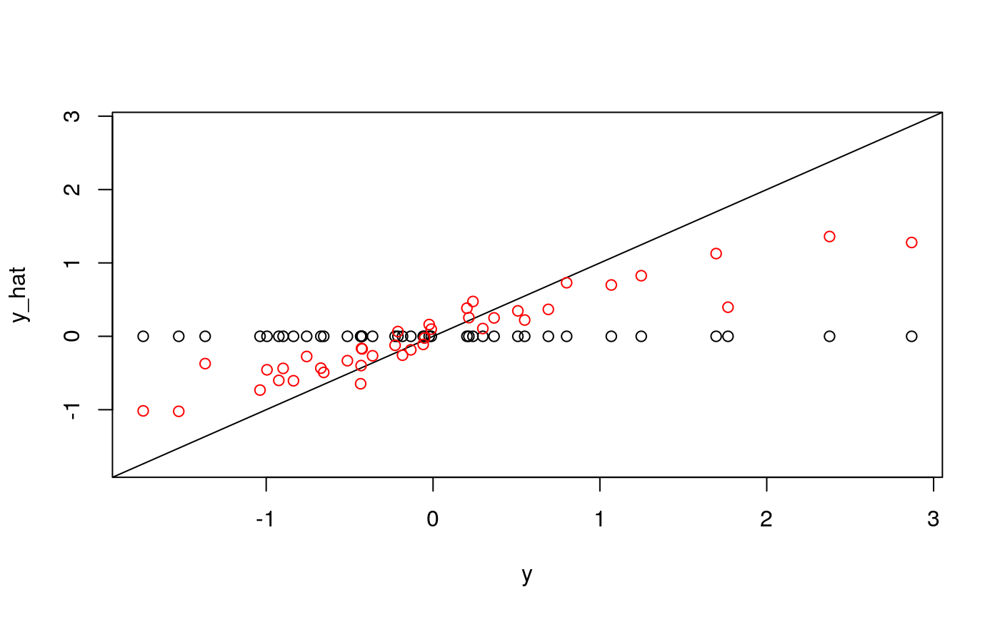
y <- as.numeric(scale(spatial_comp$sdist)) fits <- fit_wrapper(x, y)
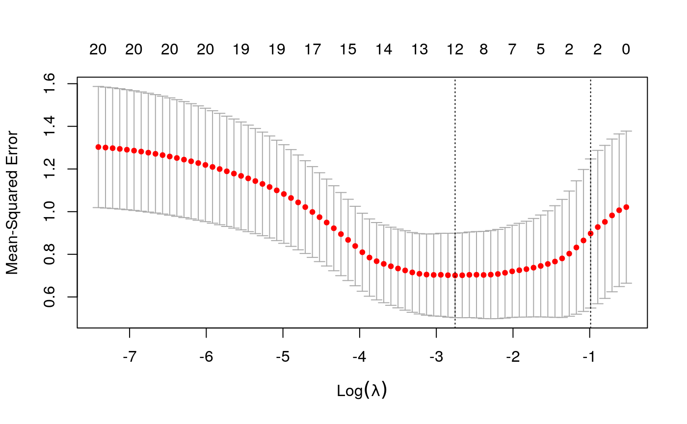
## Random Forest
##
## 40 samples
## 20 predictors
##
## No pre-processing
## Resampling: Bootstrapped (25 reps)
## Summary of sample sizes: 40, 40, 40, 40, 40, 40, ...
## Resampling results across tuning parameters:
##
## mtry RMSE Rsquared MAE
## 2 0.8276062 0.3408944 0.6091935
## 11 0.8209679 0.3392014 0.6113122
## 20 0.8501928 0.3048869 0.6347743
##
## RMSE was used to select the optimal model using the smallest value.
## The final value used for the model was mtry = 11.plot_fits(x, y, fits$glmnet, fits$rf)
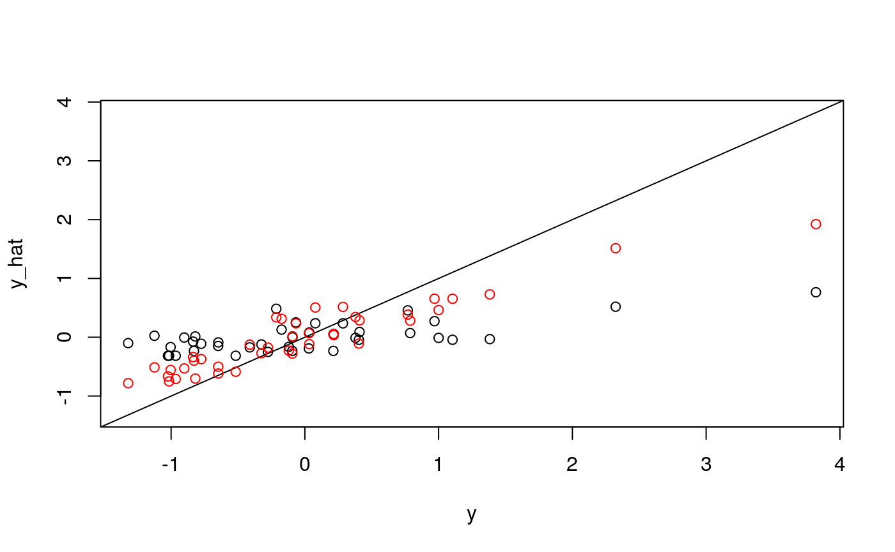
It seems like average pairwise distance is predictable, though not quite as much as entropy. The standard errors are not predictable using the linear model, but seem okay using the random forest (which I find an odd result…)
Interpreting models
Now that we have seen how we could measure the extent to which information across tables overlap, we will see if we can isolate where any new information came from. For this, we will interpret the models we used to relate the tables.
y <- as.numeric(scale(spatial_comp$me)) fits <- fit_wrapper(x, y)
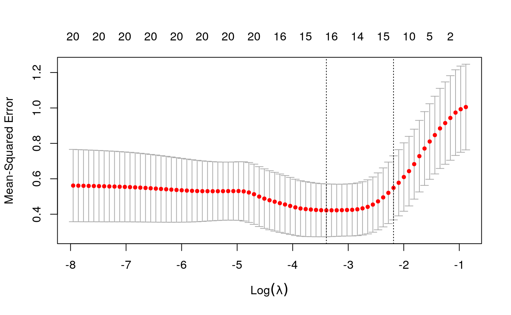
## Random Forest
##
## 40 samples
## 20 predictors
##
## No pre-processing
## Resampling: Bootstrapped (25 reps)
## Summary of sample sizes: 40, 40, 40, 40, 40, 40, ...
## Resampling results across tuning parameters:
##
## mtry RMSE Rsquared MAE
## 2 0.6939938 0.6219349 0.5808349
## 11 0.7330630 0.4976350 0.6077504
## 20 0.7753926 0.4374836 0.6381822
##
## RMSE was used to select the optimal model using the smallest value.
## The final value used for the model was mtry = 2.First, let’s study the output of the glmnet model. Its out-of-sample performance is lower than the random forest’s, but it is more directly amenable to interpretation.
plot(fits$glmnet$glmnet.fit)

beta_hat <- coef(fits$glmnet$glmnet.fit)[, 10] imp_ix <- order(abs(beta_hat), decreasing = TRUE) mx <- data.frame(x = x[, imp_ix[1:10] - 1], y = y) %>% melt(id.vars = c("y")) ggplot(mx) + geom_point(aes(x = value, y = y)) + facet_wrap(~ variable)
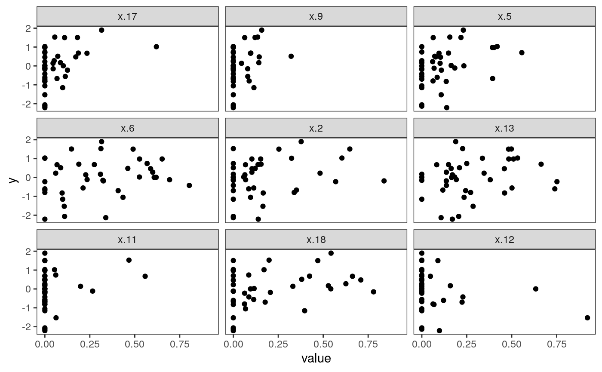
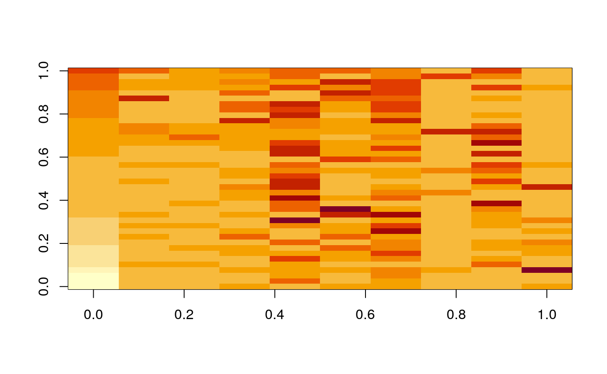
The plot above shows what the most important predictors look like. Apparently, many clusters have no representation in many samples – these are the vertical bars at zero. However, increasing the number of cells from particular clusters seems clearly related to increases in sample-level entropy. Interestingly, increasing the proportion too much ends up decreasing entropy. This is reasonable in retrospect, since having too many cells from one cluster will preclude any mixing. This nonlinear structure also likely explains why the random forest performed better in this application.
Interpreting clusters
In the figure below, we plot the centroid of each cluster. Each panel is a different cluster, and is shaded according to the lasso coefficient associated with that cluster. Each bar is a single protein, and its height is the average expression value of that protein within the cluster.
z <- cell_clusters$centers mcenters <- melt(z, varnames = c("cluster", "protein")) %>% mutate( protein = factor(protein, colnames(z)[hclust(dist(t(z), method="manhattan"))$order]), cluster = factor(cluster, hclust(dist(z, method = "manhattan"))$order), ) mcenters <- mcenters %>% left_join(data.frame( cluster = factor(0:20, levels = c(0, levels(mcenters$cluster))), beta = beta_hat )) ggplot(mcenters) + geom_bar( aes(x = protein, y = value, fill = beta), stat = "identity" ) + scale_fill_viridis() + scale_y_continuous(limits = c(-2, 6), oob = scales::squish) + facet_wrap(~ cluster) + theme(axis.text.x = element_text(size = 5, angle = -90, hjust = 0))

Most clusters have no relationship with the response in the lasso model. Below we plot only those with nonzero coefficients. Note that the cluster with the strongest relationship with entropy is the one with a high fraction of expression level for CD8, which is consistent with our observation earlier that CD8 cells are associated wtih higher entropy local neighborhoods.
ggplot(mcenters %>% filter(beta != 0)) + geom_bar( aes(x = protein, y = value, fill = beta), stat = "identity" ) + scale_fill_viridis() + scale_y_continuous(limits = c(-2, 6), oob = scales::squish) + facet_grid(cluster ~ .) + theme(axis.text.x = element_text(angle = -90, hjust = 0))

We can make something similar for the random forest model.
Regressing proxy response
An easy way to tell whether there is additional structure from one source relative to another is to see whether the ability to predict some independently interesting variable changes when you include that source. This is the table-wise analog of variable importance. In principle, we could multitask regress on to several phenotypic variables, but for now, we’ll focus on survival.
There seem to be two general ways to carry out this strategy, * Predict using the two tables separately, then together. See to what extent the underlying information is orthogonal. If the information is completely redundant, there is no benefit by combining the separate sources. * Compute the residual of one source, regressing out the other. This is somehow the “leftover” structure, and can also be used for prediction.
We’ll try the first approach here, using a random survival forest to predict survival time using both the spatial, expression, and combined features.
combined_x <- spatial_comp %>% dplyr::select(-SampleID, -TIL_score) %>% mutate_at(vars(matches("[0-9]+")), sqrt) %>% as.matrix() library("survival") library("glmnet") library("randomForestSRC") keep_ix <- !is.na(spatial_samp$Survival_days_capped_2016.1.1) y <- Surv(spatial_samp$Survival_days_capped_2016.1.1[keep_ix], spatial_samp$Censored[keep_ix]) surv_glmnet <- cv.glmnet(scale(combined_x[keep_ix, ]), y, family = "cox") plot(surv_glmnet)
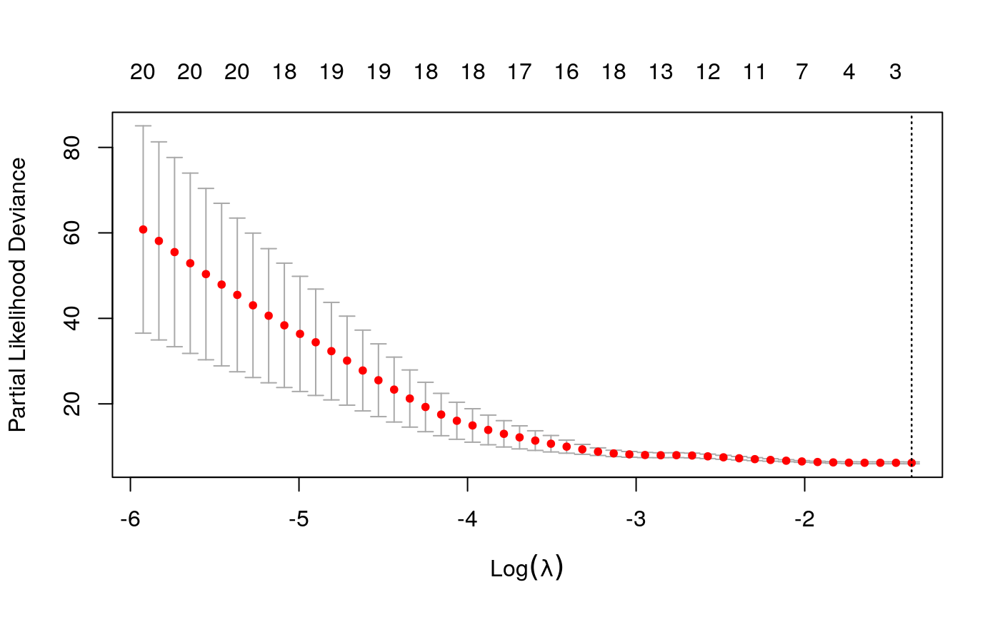
plot(surv_glmnet$glmnet.fit)
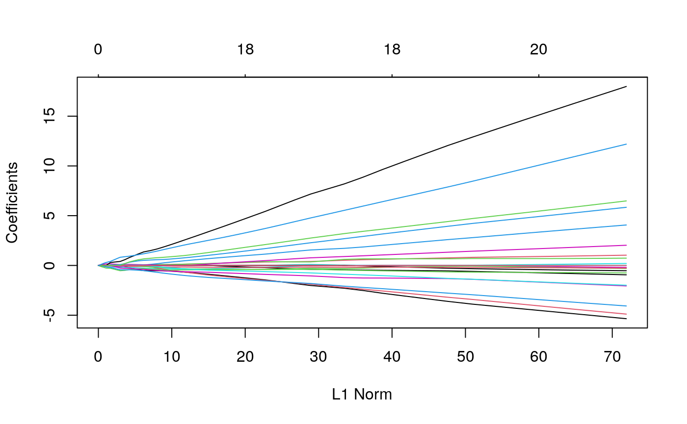
surv_rf <- rfsrc(y ~ . , data = data.frame(combined_x[keep_ix, ], y = y), mtry=20) plot(surv_rf) # this model is hopeless
It doesn’t seem like survival is so easy to predict, using this information. This prevents meaningful comparisons between the two feature sets – they are both equally incapable of predicting the response.
Viewed differently, though, the cells within samples are not i.i.d., so the reduction may not be so dramatic.↩︎